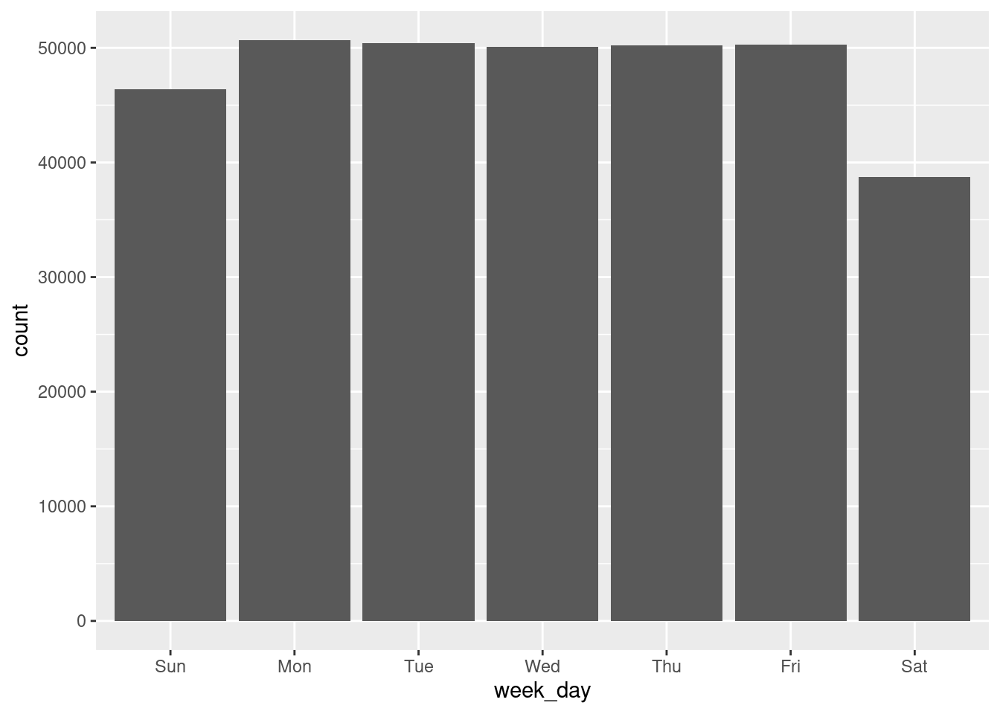
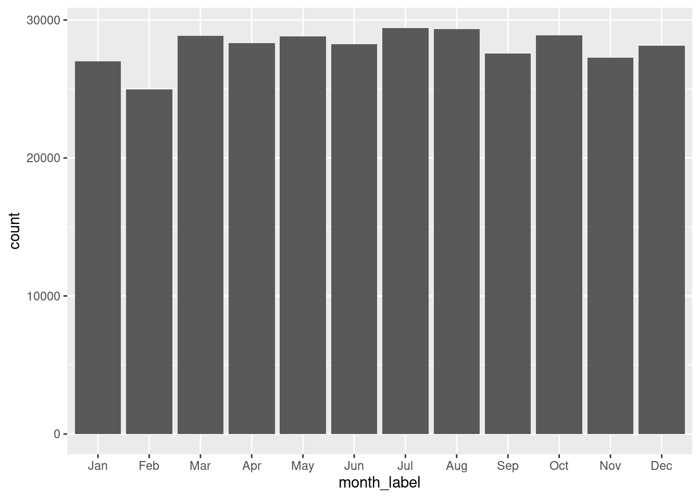
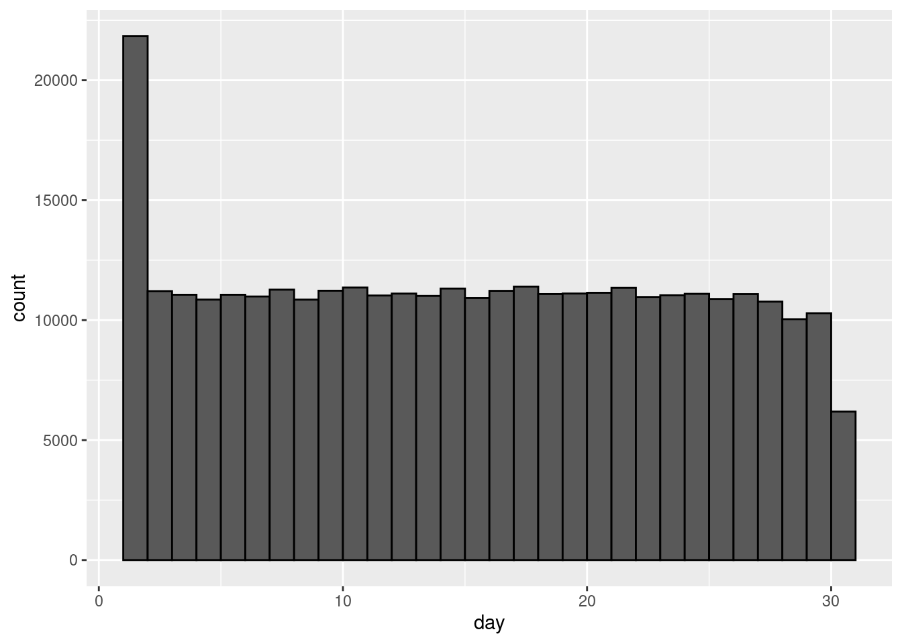
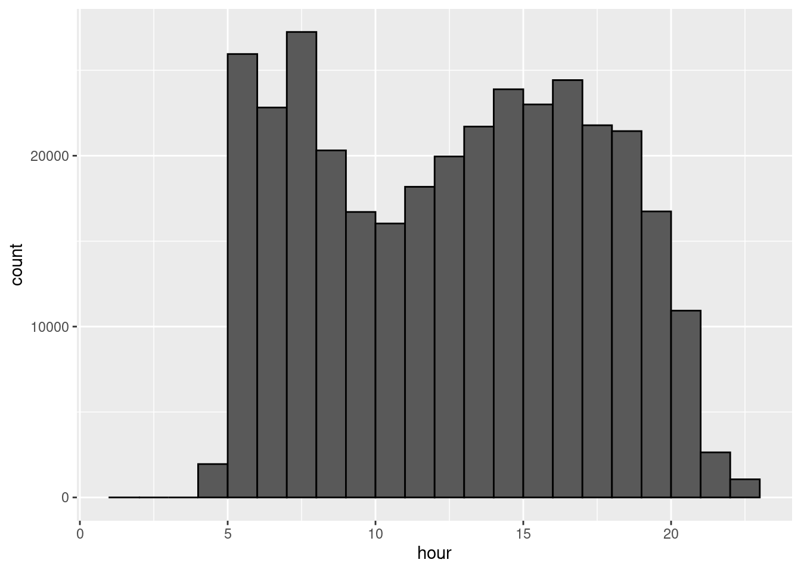
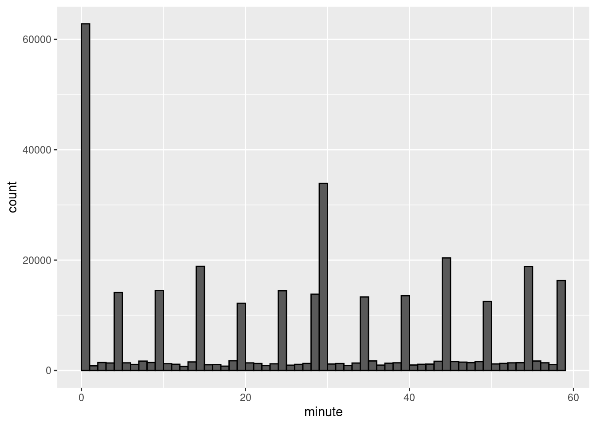
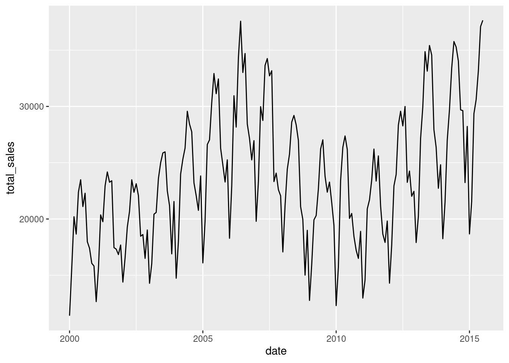
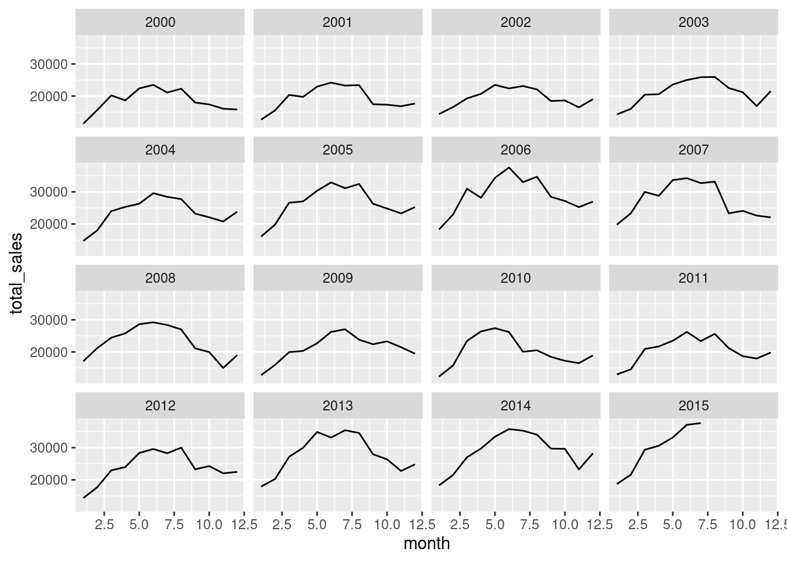
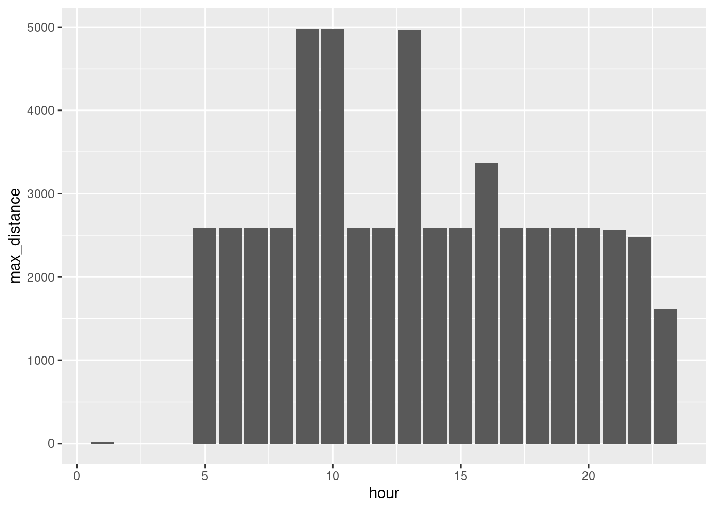

Dates Times
Learning objectives
- Recognize different ways dates and times are stored in datasets.
- Parse and convert dates and times to handle different formats.
- Manipulate dates and times to extract specific components or to calculate differences.
- Summarize and visualize date/time Data.
Start your workflow by uploading the tidyverse package which contains the functions to manipulate dates and times:
We will take a look at different dates in txhousing and in flights of New York City.
Here are the datasets we will manipulate today:
In what format are dates/times reported in each dataset?
There are various formats in each dataset: either separated by year, month, etc., or appearing as a combination of this information into one value (for example, date in txhousing or time_hour in flights`).
1. Parsing dates and times
Parsing dates and times means converting a string or numeric representation of a date or time into a proper object that R can understand and work with. When data is read from a file, sometimes dates and times appear in formats that are not automatically recognized as dates/times.
a. R formats
Here is a typical date/time format in R:
## [1] "2025-04-20 14:29:57 CDT"By default, R considers:
datesas “yyyy-mm-dd” (year-month-day)timesas “hh:mm:ss” (hours:minutes:seconds)date/times,
dttmas “yyyy-mm-dd hh:mm:ss”
Here are some examples of different ways to report dates as a string and to convert it as a date in an R format:
## [1] "2025-02-19"## [1] "2025-02-19"## [1] "2025-02-19"## [1] "2025-02-19"## [1] "2025-02-19"## Warning: All formats failed to parse. No formats found.## [1] NA# Note we can change default language/cultural conventions with `locale =`
# month, day, year
mdy("2/19/2025")## [1] "2025-02-19"## [1] "2025-02-19"Similarly, we can convert strings into time:
## [1] "2025-02-19 09:00:00 UTC"# also check other date functions with _hms or _hm, or simply the function hm() and hms()
hms("09:00:00 AM")## [1] "9H 0M 0S"If the date is already in a R format but appears as a string, we can change it as a date with as_date() or as_datetime():
## [1] "character"## [1] "2025-02-19"## [1] "Date"## [1] "2025-02-19 09:00:00 UTC"## [1] "POSIXct" "POSIXt"b. Combining date/time components
We can combine the different parts of a date with make_date() or also add time with make_datetime().
By default, the day on the date was set to the first day of the month.
c. Extracting part(s) of the date
On the contrary, we might want to extract some specific date/time information from a date:
## [1] 2025## [1] 4## [1] 20## [1] 16## [1] 1## [1] 14## [1] 29## [1] 57.96388Check the label and abbr options for month() and wkday():
## [1] April
## 12 Levels: January < February < March < April < May < ... < December## [1] Sun
## Levels: Sun < Mon < Tue < Wed < Thu < Fri < Sat2. Manipulating dates and times
a. Finding differences between dates and times
We can find date/time differences with difftime():
# How many days between now and the first day of the semester?
difftime(now(), mdy_hms("1-13-2025 08:00:00 am"), units = "days")## Time difference of 97.47914 days# What if we want to find the difference with another unit?
difftime(now(), mdy_hms("1-13-2025 08:00:00 am"), units = "weeks")## Time difference of 13.92559 weeks## Time difference of 2339.499 hours## Time difference of 140370 mins## Time difference of 8422198 secsNote that the output reports the time difference with a unit. If we would like to find the value of the difference, we can use the function as.numeric():
## [1] 97.47914b. Summarizing date/time data
Depending on the level of detail we would like to focus on, we can aggregate the data by specific time units. For example, we can compare summaries over years, months, days of the week, or by the hour, minute, second.
Try it! In the flights dataset, extract the information of the weekday from the time_hour variable. On which day of the week are there more flights?
# Use a plot
flights |>
mutate(week_day = wday(time_hour, label = TRUE)) |>
ggplot() + geom_bar(aes(x = week_day))
# Or find summary statistics
flights |>
mutate(week_day = wday(time_hour, label = TRUE)) |>
group_by(week_day) |>
summarize(total_flights = n()) |>
arrange(total_flights)There are more flights on Monday (and less flights on Saturday).
Try it! We looked at the number of flights per day before. Compare the number of flights at another time unit. Do you notice any differences?
# Comparing per month
flights |>
mutate(month_label = month(time_hour, label = TRUE)) |>
ggplot() + geom_bar(aes(x = month_label))
# Comparing per day of the month
flights |>
ggplot() + geom_histogram(aes(x = day), binwidth = 1, center = 0.5, color = "black")
# Comparing per hour of the day
flights |>
ggplot() + geom_histogram(aes(x = hour), binwidth = 1, center = 0.5, color = "black")
# Comparing every 10 minutes
flights |>
ggplot() + geom_histogram(aes(x = minute), binwidth = 1, center = 0.5, color = "black")
We can note that: the number of flights varies per month (seems to be related to how many days there are in a month), the number of flights varies per day (with less occurences of day 31), the number of flights varies per hour (more flights in early morning and in the middle of the afternoon), the number of flights varies per minute (with most flights scheduled on the hour and about every 5 minutes).
We can also represent the values of a variable over time:
# Comparing sales over time
txhousing |>
group_by(date) |>
summarize(total_sales = sum(sales, na.rm = TRUE)) |>
ggplot() + geom_line(aes(x = date, y = total_sales))
And compare if there is the same pattern over a repeating time unit (for example, months repeat every year):
# Comparing monthly sales for each year
txhousing |>
group_by(year,month) |>
summarize(total_sales = sum(sales, na.rm = TRUE)) |>
ggplot() + geom_line(aes(x = month, y = total_sales)) +
facet_wrap(~year)
Try it! Compare the maximum distance for a flight per hour of the day. When do longer flights depart from NYC airports?
# Comparing per hour
flights |>
group_by(hour) |>
summarize(max_distance = max(distance, na.rm = TRUE)) |>
ggplot() + geom_bar(aes(x = hour, y = max_distance), stat = "identity")
The longest flights seem to be scheduled at 9am, 10am, and 1pm.
c. A few remarks
Here are some common pitfalls to look out for:
Different date formats (e.g., MM/DD/YYYY vs. DD/MM/YYYY) can lead to incorrect parsing. Always specify the date format explicitly when converting strings to dates.
Take into account that not all years are 365 days (leap years), not all months have the same amount of days, and not all days are 24 hours (daylight saving time). Most
lubridatefunctions are designed to take those facts into account.The time is not the same depending on where the data was collected. Convert dates/times between time zones
with_tz()from thelubridatepackage.
Recommended Resources
- Worksheet keys are posted at the end of the week on Canvas under Programming Tools.
- Recommended readings: Dates and times
- More practice with
lubridateand cheat sheets: Make Dealing with Dates a Little Easier